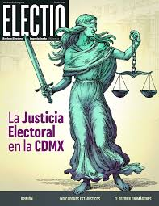

Curso de Democracia y Educación Electoral en México
Un taller formativo teórico-práctico diseñado para fortalecer la cultura cívica y consolidar los valores democráticos institucionales.
Población Objetivo
Estudiantes de secundaria, preparatoria y/o licenciatura.
Modalidad y Duración
Presencial, Teórico-Práctica (3 hrs/semana)
Área Académica
Formación Cívica / Sociales / Derecho
Docente Responsable
Bulmaro García Arcos
0
Módulos Específicos
Desde democracia hasta medios de impugnación.
0%
Aplicación Práctica
Simulación íntegra de elección escolar y casos.
+0
Competencias
Desarrollo de análisis institucional y cívico.
II. Diagnóstico
El reto de la participación juvenil
En el contexto actual se identifica baja participación de las juventudes en los asuntos públicos, sobre todo en cuestiones electorales.
La falta de educación electoral en los planes de estudio y por ende un conocimiento insuficiente sobre el funcionamiento del sistema electoral mexicano.
Esta situación refuerza la necesidad de la formación democrática temprana para los estudiantes pues dicha formación les brindará las bases para formar no solo el aspecto académico sino, el de toma de decisiones conscientes. Lo cual puede llegar a impactar, la participación democrática y la comprensión del Estado de Derecho.
4.- Los niveles secundaria, medio superior y superior representan etapas estratégicas para fortalecer la cultura cívica, consolidar valores democráticos y fomentar el respeto por las instituciones.

III. Justificación y IV. Normativa
Fundamento Estructural
La Constitución establece que México es una República democrática, representativa y federal. Asimismo, dispone que la función electoral es una función estatal regida por principios constitucionales específicos.
La educación en materia electoral no sólo es formativa, sino estructural para la preservación del orden democrático. Comprender cómo se organizan las elecciones, su regulación, las autoridades que actúan como árbitros; cómo se eligen las autoridades y como se resuelven los conflictos fortalece la cultura de legalidad y la convivencia pacífica.
CONSTITUCIÓN POLÍTICA (CPEUM)
Artículo 40: Forma de gobierno democrática.
Artículo 41: Sistema electoral y principios rectores.
Artículo 99: Sistema de justicia electoral.
Artículo 116: Elecciones en el ámbito local.
LEGISLACIÓN SECUNDARIA
Ley General de Instituciones y procedimientos electorales.
Ley General del Sistema de Medios de Impugnación en Materia Electoral.
Ley general de Partidos Políticos. Estos ordenamientos establecen los principios de legalidad, certeza, independencia, imparcialidad, objetividad y máxima publicidad.
V. Objetivo General
"Desarrollar en el alumnado una comprensión integral del sistema electoral mexicano, sus fundamentos constitucionales, las etapas del proceso electoral y los mecanismos de defensa de los derechos político- electorales."
VI. Objetivos Específicos
01.Analizar el concepto de democracia (formal y sustantiva).
02.Identificar los principios del sistema electoral.
03.Explicar la división de poderes y niveles de gobierno.
04.Analizar la estructura y funciones de las autoridades electorales.
05.Comprender las etapas del proceso electoral.
06.Reconocer las características del voto.
07.Identificar conductas constitutivas de delitos electorales.
08.Conocer la finalidad del sistema de medios de impugnación.
Perfiles y Competencias
Habilidades a desarrollar antes y después del taller formativo.
VII. Perfil de Ingreso
Conocimientos básicos de Formación Cívica.
Interés por temas sociales y democráticos.
VII. Perfil de Egreso
Al concluir el curso, el estudiante será capaz de:
Explicar las etapas del proceso electoral mexicano.
Identificar autoridades electorales y sus funciones.
Reconocer los medios de defensa en materia electoral.
Participar en simulaciones respetando reglas democráticas.
Elaborar una inconformidad básica (nivel preparatoria).
Competencias Cívicas
El estudiante será capaz de:
• Comprender los principios constitucionales de la democracia mexicana.
• Identificar las institutions que integran el sistema electoral.
• Reconocer las etapas del proceso electoral.
• Analizar la importancia del voto como derecho político fundamental.
• Valorar el papel de la legalidad en la resolución de conflictos electorales.
• Fortalecer la cultura democrática institucional.
• Promover la participación ciudadana informada.
• Desarrollar pensamiento crítico y argumentación básica.
Competencias Analíticas
El estudiante desarrollará:
Pensamiento crítico
Capacidad de argumentación
Análisis institucional
Comprensión básica de normas jurídicas
Metodología y Evaluación
Metodología Didáctica
Aprendizaje teórico práctico.
Simulación integral de proceso electoral escolar.
Elaboración de mapas conceptuales.
Resolución de caso práctico.
Estrategia de Evaluación
Evaluación Diagnóstica
Cuestionario inicial.
Evaluación Formativa
Observación continua y retroalimentación.
Indicadores de aprendizaje (Se evaluará si el alumno es capaz de):
Explicar qué es la democracia.
Identificar a las autoridades electorales.
Describir las etapas del proceso electoral explicar la función de los partidos políticos.
Comprender el funcionamiento básico del sistema de justicia electoral.
Evaluación Sumativa
Participación30%
Evaluación escrita30%
Proyecto final escolar simulada40%
Indicadores:
Comprensión conceptual.
Aplicación práctica de reglas.
Argumentación básica.
Cronograma de Implementación
Sesión 1Democracia
Sesión 2Principios
Sesión 3División de poderes
Sesión 4Autoridades electorales
Sesión 5Proceso electoral
Sesión 6Partidos Políticos y voto
Sesión 7Delitos Electorales
Sesión 8Medios de Impugnación
PRODUCTO FINAL
Simulación de elección escolar con:
Registro de partidos
Campañas
Jornada electoral
Impugnación simulada
Conclusión General
El presente programa académico se encuentra debidamente sustanciado desde una perspectiva constitucional, legal, pedagógica y social.
Desde el ámbito jurídico, su contenido se fundamenta expresamente en los artículos 40, 41, 99 y 116 de la Constitución Política de los Estados Unidos Mexicanos, así como en la legislación electoral secundaria aplicable. La incorporación sistemática de todas las etapas del proceso electoral – incluyendo precampañas, campañas, jornada electoral, cómputos y declaración de validez – permite ofrecer una visión integral del modelo electoral mexicano, garantizando coherencia normativa y rigor conceptual.
Desde el enfoque pedagógico, el programa combina teoría y práctica mediante simulaciones electorales, análisis de casos, ejercicios de argumentación básica y elaboración de escritos sencillos de inconformidad a nivel preparatoria y licenciatura, favoreciendo el aprendizaje significativo y el desarrollo de competencias cívicas y jurídicas iniciales.
En el plano social, el curso fortalece la cultura democrática, fomenta la legalidad, promueve la resolución institucional de conflictos y contribuye a formar ciudadanía informada, crítica y participativa. La comprensión de las reglas del proceso electoral y del sistema de medios de impugnación permiten que el estudiantado internalice la importancia del respeto a las instituciones y al Estado de Derecho.
En consecuencia, la propuesta no solo cumple con criterios académicos y normativos, sino que responde a una necesidad formativa actual, consolidándose como un instrumento viable y pertinente para fortalecer la educación cívica en los niveles secundaria, medio superior y superior.
El que suscribe y docente responsable:
Bulmaro García Arcos
Especialista en Formación Cívica, Ciencias Sociales y Derecho. Capacitador en proyectos académicos e institucionales enfocados al desarrollo de competencias cívicas.
La democracia a través de la historia (concepto y evolución)
Democracia representativa en México
Democracia instrumental vs. Democracia sustantiva
Principios rectores de la función electoral
Los principios constitucionales que rigen la materia electoral en México (Arts. 41 y 116 CPEUM) garantizan elecciones democráticas mediante los principios rectores de la autoridad electoral (INE/OPLEs):
CERTEZA: Conocimiento claro de las normas para que los actores políticos sepan a qué atenerse.
LEGALIDAD: Actuación apegada estrictamente a la Constitución y leyes vigentes.
INDEPENDENCIA: Autonomía de las autoridades electorales frente a los poderes públicos y partidos políticos.
IMPARCIALIDAD: Actuar sin favoritismos ni sesgos hacia ninguna fuerza política.
OBJETIVIDAD: Reconocimiento objetivo de los hechos, sin prejuicios.
MÁXIMA PUBLICIDAD: Trasparencia y acceso de los actos electorales.
PARIDAD EN RAZÓN DE GENERO: Igualdad en la postulación entre hombres y mujeres.
PRINCIPIOS DEL SISTEMA ELECTORAL Y SUFRAGIO:
Elecciones Libres Auténticas y Periódicas: Renovación periódica de los poderes a través de la voluntad popular.
Sufragio Universal, Libre, Secreto, Directo e Intransferible: Voto de todos los ciudadanos, sin coacción, confidencial y sin intermediarios.
Equidad: Igualdad de condiciones en la contienda, financiamiento y acceso a medios.
Paridad de Género: Garantía de postulación equilibrada entre hombres y mujeres.
Definitividad: Las etapas del proceso electoral concluyen de manera firme, dando certeza a los resultados.
3.1 Poder Ejecutivo.
3.2 Poder Legislativo.
3.3 Poder Judicial.
3.4 Ámbitos federal, estatal y municipal.
4.1 Autoridad administrativa.
4.1.1 INE, OPLE
4.2 Autoridad jurisdiccional.
4.2.1 Tribunal Electoral del Poder Judicial de la Federación.
4.2.2 Salas regionales.
4.2.3 Sala Superior.
El proceso electoral comprende de las siguientes etapas:
5.1 PREPARACIÓN DE LA ELECCIÓN: 5.1.1 Precampañas. 5.1.1.2 Campañas.
5.2 JORNADA ELECTORAL.
5.3 RESULTADOS Y DECLARACIÓN DE VALIDEZ.
5.4 DICTAMEN Y DECLARACIÓN DE VALIDEZ DE LA ELECCIÓN DE PRESIDENTE ELECTO DE LOS ESTADOS UNIDOS MEXICANOS.
6.1 Naturaleza Jurídica.
6.2 Funciones Constitucionales.
6.3 Candidaturas Independientes.
6.4 Características del voto.
6.5 Quienes pueden votar.
6.6 Quienes no tienen derecho a votar.
6.7 Voto Extranjero.
AUTORIDAD ADMINISTRATIVA:
7.1 Descripción.
7.2 Quienes pueden cometer delitos electorales.
7.3 Sanciones.
8.1 Finalidad del sistema de justicia electoral.
8.2 Juicio para la protección de derechos político-electorales (nivel preparatoria y licenciatura).
8.3 Control de constitucionalidad en materia electoral.
INVERSIÓN Y SERVICIOS
Planes y Diseño a la Medida
Entendemos que cada institución es única. No ofrecemos paquetes genéricos, sino que diseñamos y adaptamos la experiencia conforme a los requerimientos y el tamaño de la población estudiantil, garantizando un servicio de calidad premium.
Flexibilidad Total
Estructuramos las horas, las sesiones y la profundidad de los temas según su plan de estudios, garantizando total adaptación a nivel secundaria, preparatoria o licenciatura.
PREMIUM
Simulación Avanzada
Incluye materiales premium para la simulación electoral escolar: urnas, papelería personalizada, casos de Medios de Impugnación y herramientas profesionales.
Acompañamiento Escolar
Soporte continuo e integral por parte del docente responsable para garantizar el éxito de la simulación electoral y la evaluación sumativa.